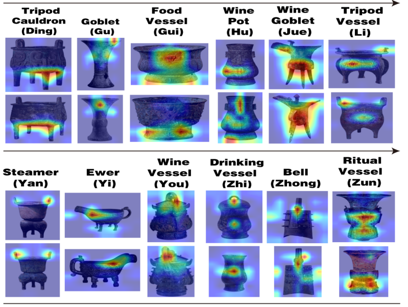
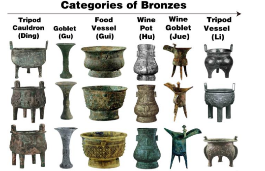

项目详情
古青铜分类断代算法研究
项目简介
通过融合轮廓、器型、纹饰特征，构建古青铜分类与断代的端到端多任务模型，并设计青铜器类别功能矩阵辅助分类任务。 消融实验结果表明，分类准确率达到 97.59%，断代准确率达到 87.57%。



技术栈
核心算法：PyTorch、Python、NumPy
主要职责
- 完成青铜器图像及标签数据的爬取和清洗，整理出 10956 张带标签的训练数据。
- 设计轮廓特征、器型特征和纹饰特征三条分支，构建分类断代的特征提取模块。
- 分别设计分类头和断代头，并在分类头中引入青铜器类别功能矩阵提升分类效果。